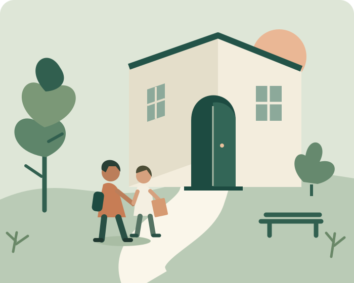

VOOR OUDERS EN SCHOOL
Weer naar
school.
Afspraken maken over schoolwerk, rust en contact met de klas tijdens of na ziekte.
Bekijk de onderwerpen
DE BROCHURE
Wat wil je bespreken?
Open een onderwerp. Bewaar de vragen
die je mee wilt nemen naar het gesprek.
HET GESPREK VOORBEREIDEN
Jouw vragen,
op één vel.
Voeg vragen uit de brochure toe aan je gesprekslijst. Neem de lijst mee naar school of druk hem af om samen afspraken te noteren.
Je keuzes blijven alleen open zolang deze pagina open is.